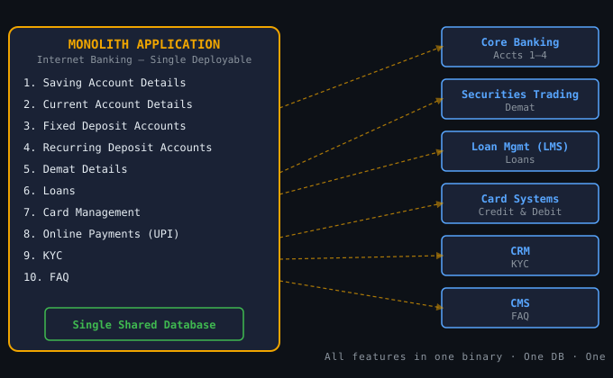
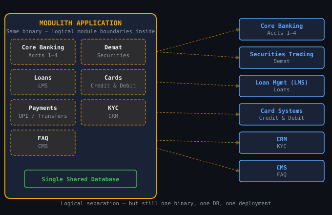
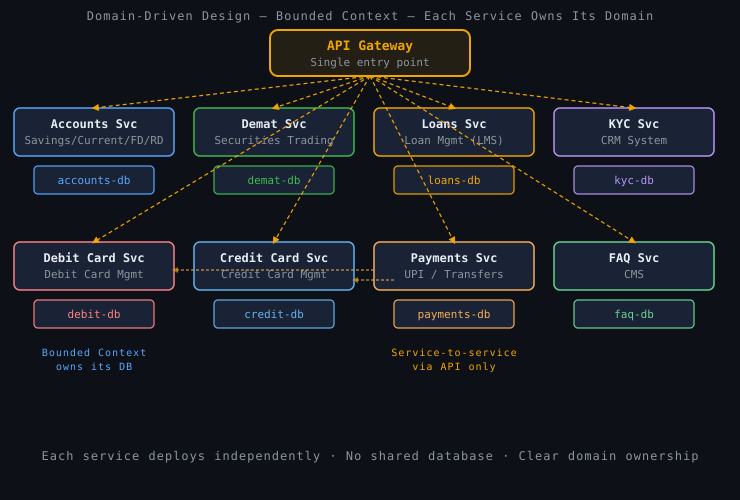
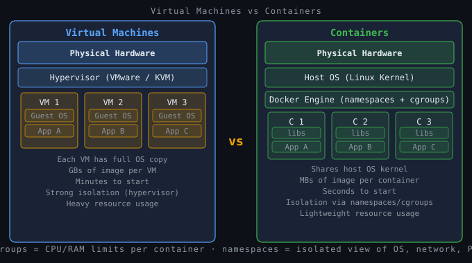
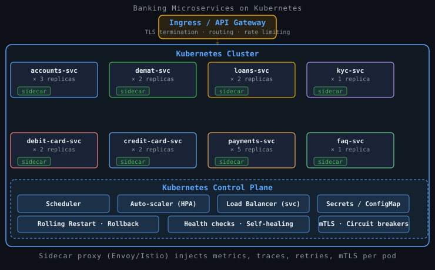
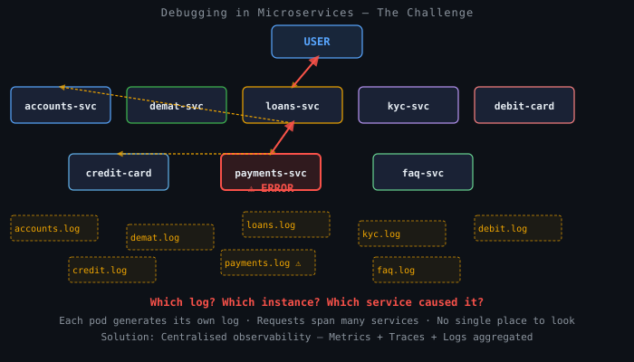
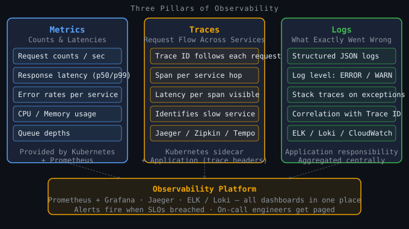

We know why lift-and-shift fails. Now we learn how to redesign applications to be efficient, resilient, and independently deployable in the cloud. From monolith to microservices — and the principles that make it work.
Most enterprise applications before cloud were monolithic — a single deployable binary containing every feature, all sharing one database. Think SAP, Siebel, Oracle Financials — or any large bespoke in-house system. The internet banking application below is a classic example.

A modulith is a monolith that enforces strict logical boundaries between its modules — each module has its own package/namespace, its own internal API, and cannot directly access another module's internals. Still one binary, still one database, but the internal structure is disciplined.

The real solution is to break the application along functional domain boundaries. Each domain becomes an independent service that owns its own data, its own deployment lifecycle, and communicates with other services only through well-defined APIs.
Savings, Current, Fixed Deposit, Recurring Deposit → Core Banking System
Demat account management → Securities Trading System
Home, personal, auto loans → Loan Management System (LMS)
Know Your Customer — identity verification → CRM System
Debit card management (separate service) + Credit card management (separate service)
UPI, transfers, online payments — calls Accounts, Debit, Credit APIs
Each service deploys independently, owns its own database, and communicates via API only. An API Gateway is the single entry point for all client requests.

accounts-svc from 3 to 20 replicas. Everything else stays at its normal size. Cost goes up only for the service that needs it.
In 2011, engineers at Heroku distilled the hard-won lessons from deploying thousands of applications into twelve principles — a methodology for building software that is portable, scalable, and maintainable in modern cloud environments. Full manifesto at 12factor.net.
Codebase, Dependencies, Config — how you package and configure an application so it is reproducible across environments.
Backing Services, Build/Release/Run, Processes — how an application connects to the world and maintains a clean separation of stages.
Port Binding, Concurrency, Disposability — how an application exposes itself, scales, and handles failures gracefully.
Dev/Prod Parity, Logs, Admin Processes — how you keep environments consistent, observe the system, and run operational tasks safely.
Rule: One codebase per service, tracked in version control (Git). The same code is deployed to dev, staging, and production — only configuration differs between them.
Why it matters: If you have separate codebases for dev and prod, you introduce drift — production bugs that cannot be reproduced locally.
Violation: A team maintains a "dev branch" that diverges from "prod branch" for months. Merging becomes a nightmare.
Rule: Explicitly declare all dependencies in a manifest (e.g. pom.xml, package.json). Never rely on packages being pre-installed on the host OS.
Why it matters: "It works on my machine" is the most expensive phrase in software. Declaring dependencies means any fresh machine can reproduce the exact same environment.
Violation: The app depends on imagemagick being installed on the server. Works locally, fails on a fresh cloud VM.
Rule: Anything that varies between deployments (DB URLs, API keys, port numbers) must be stored in environment variables — never hard-coded or committed to Git.
Why it matters: A twelve-factor app should be deployable to a new environment simply by changing env vars — no code changes, no re-build. This is exactly how Kubernetes ConfigMaps and Secrets work.
Violation: Developer commits DB_PASSWORD=prod-secret-123 into Git. Now exposed to anyone with repo access.
Rule: Any service the app consumes over the network — databases, message queues, caches — is a backing service and should be treated as an interchangeable resource, accessed via a URL stored in config.
Why it matters: You should be able to swap a local PostgreSQL for an AWS RDS instance just by changing an env var — no code changes.
Banking example: Payments treats Core Banking as a backing service. Swap the URL to a test stub and the service works identically in a test environment.
Rule: Build: compile code into an artifact. Release: combine the build with config to create a versioned, immutable release. Run: execute the release in the target environment.
Why it matters: A release is immutable — if something is wrong, roll back to the previous release. Rollback in Kubernetes is a single command.
Violation: An ops engineer SSH-es into a running container to hotfix a config file. The change is invisible to Git and lost on the next deployment.
Rule: The application should run as one or more stateless processes. Any data that needs to persist must be stored in a backing service — never in the process's memory or local filesystem.
Why it matters: A stateless process can be killed and restarted anywhere. Kubernetes does exactly this.
Violation: Accounts service stores user's session in a HashMap in memory. The load balancer routes the next request to a different pod. Session is gone. User logged out.
Rule: The app is self-contained and exposes its service by binding to a port. It does not rely on an external web server being installed on the host. The HTTP server is a dependency declared in the app itself.
Why it matters: This is how Docker containers work — each container binds to a port and the runtime maps it. The app carries its own server (e.g. embedded Tomcat in Spring Boot, Express in Node.js).
Microservices angle: Each of the 8 banking services runs on its own port. Kubernetes's Service resource maps these to stable internal DNS names regardless of which pod is running.
Rule: Scale by running more processes, not by making a single process bigger. Different workload types can be handled by different process types — web processes for HTTP, worker processes for background jobs.
Why it matters: On payday, add more Accounts pods — don't buy a bigger server. Kubernetes's Horizontal Pod Autoscaler (HPA) does this automatically.
Monolith contrast: Scaling one feature means scaling the entire application. Factor 8 is the core reason microservices exist.
Rule: Processes should start quickly and shut down gracefully. On receiving a SIGTERM, the app should stop accepting new requests, finish in-flight requests, and exit cleanly.
Why it matters: Kubernetes kills pods constantly — during scale-down, rolling updates, and node failures. An app that starts in 30 seconds delays recovery. An app that crashes mid-request corrupts data.
Target: Start in under 5 seconds. Drain gracefully. Never hold a DB transaction across multiple HTTP calls.
Rule: Minimise the gap between development, staging, and production — in time (deploy often), personnel (developers deploy their own code), and tooling (use the same DB engine locally as in production).
Why it matters: Using H2 in-memory DB locally but PostgreSQL in production causes subtle SQL bugs that only appear in production. Docker Compose makes running PostgreSQL locally trivial.
Container benefit: A Docker image built on a developer's laptop is exactly the image deployed to production. Dev/prod parity is structural, not a team discipline.
Rule: The app never concerns itself with routing or storing its logs. It writes all log events to stdout as a stream. The execution environment captures stdout and forwards to a centralised log aggregator.
Why it matters: An app that writes logs to /var/log/app.log inside the container violates Factor 6 (stateless) and makes logs invisible to Kubernetes.
Connection to observability: Kubernetes collects stdout from every pod and forwards to Loki or ELK. The app has zero log-routing code.
Rule: Administrative tasks — database migrations, data clean-up scripts, one-time backfills — should run as one-off processes in the same environment as the app, using the same codebase and config.
Why it matters: In Kubernetes this maps to a Job or CronJob — a container that runs to completion and is auditable.
Banking example: Month-end close is a CronJob that spins up the same container image as Accounts service, runs the process, and exits cleanly.
The twelve factors were written before Kubernetes existed — but they describe exactly what containers and orchestrators provide. This is not a coincidence: both grew from the same operational lessons.
docker build is the Build stage. Tagging an image with a version creates an immutable Release. docker run is the Run stage.SIGTERM before killing a pod, giving the app time to drain in-flight requests. Self-healing restarts failed pods.Eight services. Each with multiple replicas. Each needing its own OS libraries and runtime version. Managing individual VMs would be chaos. The answer is containerisation.

Docker packages the application. Kubernetes (K8s) decides where it runs, how many copies run, and what happens when something goes wrong.

Each benefit below maps directly to one or more twelve-factor principles — showing that the factors and the platform are two sides of the same coin.
Multiple library versions on the same host without conflict. The Dockerfile declares every dependency. No more "works on my machine."
No guest OS to boot — containers start in seconds (F9). Kubernetes HPA adds replicas when load rises, removes them when it drops (F8). Cost follows load.
Docker manages container networking. Backing services (F4) are addressed by internal DNS name, not hard-coded IPs. mTLS prevents spoofing.
Kubernetes Secrets inject credentials as env vars at runtime (F3). API keys, DB passwords, and certificates are never baked into images or committed to Git.
Each deployment is an immutable versioned release (F5). Kubernetes deploys pod-by-pod after health checks pass (F9). Bad release? One command rolls back.
Stdout from every pod is captured automatically (F11). Sidecar proxies emit metrics and traces. No log-routing code in the application.
Stateless services (F6) can be killed and restarted anywhere. Kubernetes restarts failed pods automatically. One service's crash does not affect the rest.
One codebase per service (F1) means teams deploy independently. Payments ships Friday; Loans ships Monday. No shared deployment window.
Every architectural choice is a trade-off. Microservices solve the monolith's problems but introduce a new category of operational complexity.
When a user's payment fails, a developer must trace through multiple services, each running multiple instances, each generating its own log file. Without tooling, this is hours of manual work.

Observability is the ability to understand the internal state of a system from its external outputs. It is built on three complementary signals that together answer: is something wrong, where is it wrong, and why is it wrong? Factor 11 (logs to stdout) is the foundation that makes all three pillars collectible by the platform.

What: Request rates, latencies (p50/p99), error rates, CPU, memory. Kubernetes and the sidecar capture most automatically.
Answers: "Is something wrong right now?"
Tools: Prometheus + Grafana
What: End-to-end journey of a single request across all services. Each service adds a span via the sidecar. App only passes the Trace ID header through.
Answers: "Where is the failure / slowness?"
Tools: Jaeger, Zipkin, Grafana Tempo
What: Structured JSON written to stdout (Factor 11). Kubernetes captures and forwards to aggregator. App has zero routing code.
Answers: "Exactly what went wrong?"
Tools: Grafana Loki, ELK Stack
Single binary, single DB. Modulith adds internal module boundaries. Both share all-or-nothing scaling and deployment.
Bounded contexts. Independent services, each owning its data and deployment. Scaled individually, released independently.
Design principles that make services work with — not against — the container platform. Config in env, stateless, fast startup, logs to stdout.
Self-contained, immutable images. Namespaces + cgroups = isolation. Same image from dev to prod. Fulfils Factors 2, 5, 7, 10.
Scheduling, autoscaling, self-healing, rolling updates, secrets, service mesh. Fulfils Factors 3, 4, 8, 9, 11, 12.